기계설계기사 (2019-04-27 기출문제)
1과목: 재료역학
1. 원형축(바깥지름 d)을 재질이 같은 속이 빈 원형축(바깥지름 d, 안지름 d/2)으로 교체하였을 경우 받을 수 있는 비틀림 모멘트는 몇 %감소하는가?
- 6.25
- 8.25
- 25.6
- 52.6
(정답률: 30%)

2. 단면 20cm×30cm, 길이 6m의 목재로 된 단순보의 중앙에 20kN의 집중하중이 작용할 때, 최대 처짐은 약 몇 cm인가? (단, 세로탄성계수 E=10GPa이다.)
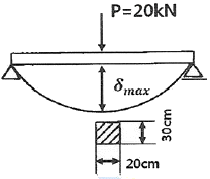
- 1.0
- 1.5
- 2.0
- 2.5
(정답률: 22%)
3. 직육면체가 일반적인 3축 응력 σx, σy, σz를 받고 있을 때 체적 변형률 εu는 대략 어떻게 표현되는가?:
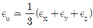
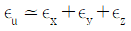
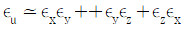
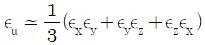
(정답률: 25%)
4. 포아송의 비 0.3, 길이 3m인 원형단면의 막대에 축방향의 하중이 가해진다. 이 막대의 표면에 원주방향으로 부착된 스트레인 게이지가 -1.5×10-4의 변형률을 나타낼 때, 이 막대의 길이 변화로 옳은 것은?
- 0.135mm 압축
- 0.135mm 인장
- 1.5mm 압축
- 1.5mm 인장
(정답률: 30%)
5. 다음과 같이 길이 L인 일단고정, 타단지지보에 등분포 하중 ω가 작용할 때, 고정단 A로 부터 전단력이 0이 되는 거리(X)는 얼마인가?
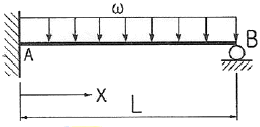
- 3/2L
- 4/3L
- 5/8L
- 3/8L
(정답률: 24%)
6. 단면적이 7cm2이고, 길이가 10m인 황봉의 온도를 10℃ 올렸더니 길이가 1mm 증가했다. 이 환봉의 열팽창계수는?(오류 신고가 접수된 문제입니다. 반드시 정답과 해설을 확인하시기 바랍니다.)
- 10-2/℃
- 10-3/℃
- 10-4/℃
- 10-5/℃
(정답률: 25%)
7. 지름 4cm, 길이 3m인 선형 탄성 원형 축이 800rpm으로 3.6kW를 전달할 때 비틀림 각은 약 몇 도(°)인가? (단, 전단 탄성계수는 84GPa이다.)
- 0.0085°
- 0.35°
- 0.48°
- 5.08°
(정답률: 22%)
8. 그림과 같은 형태로 분포하중을 받고 있는 단순지지보가 있다. 지지점 A에서의 반력 RA은 얼마인가? (단, 분포하중
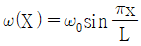
이다.)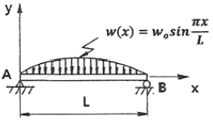
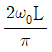
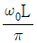
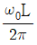
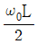
(정답률: 14%)
9. 다음과 같은 단면에 대한 2차 모멘트 Ix는 약 몇 mm4인가?
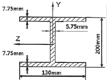
- 18.6×106
- 21.6×106
- 24.6×106
- 27.6×106
(정답률: 31%)
10. 안지름이 80mm, 바깥지름이 90mm이고 길이가 3m인 좌굴 하중을 받는 파이프 압축부재의 세장비는 얼마 정도인가?
- 100
- 110
- 120
- 130
(정답률: 28%)
11. 끝이 닫혀있는 얇은 벽의 둥근 원통형 압력용기에 내압 p가 작용한다. 용기의 벽의 안쪽 표면 응력상태에서 일어나는 절대 최대전단응력을 구하면? (단, 탱크의 반경=r, 벽 두께=t이다.)
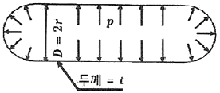
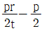
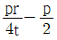
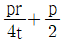
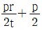
(정답률: 18%)
12. 그림에서 C점에서 작용하는 굽힘모멘트는 몇 Nㆍm인가?
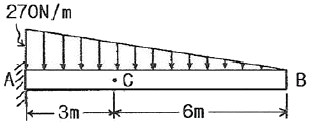
- 270
- 810
- 540
- 1080
(정답률: 10%)
13. 그림과 같은 평면 응력 상태에서 최대 주응력은 약 몇 MPa인가? (단, σx=500MPa, σy=-300MPa, txy=-300MPa이다.)
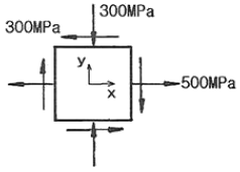
- 500
- 600
- 700
- 800
(정답률: 30%)
14. 그림과 같은 구조물에서 점 A에 하중 P=50kN이 작용하고 A점에서 오른편으로 F=10kN이 작용할 때 평형위치의 변위 x는 몇 cm인가? (단, 스프링탄성계수(k)=5kN/cm이다.)
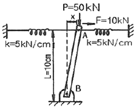
- 1
- 1.5
- 2
- 3
(정답률: 28%)
15. 강재 종공축이 25kNㆍm의 토크를 전달한다. 중공축의 길이가 3m이고, 이 때 축에 발생하는 최대전단응력이 90MPa이며, 축에 발생된 비틀림각이 2.5°라고 할 때 축의 외경과 내경을 구하면 각각 약 몇 mm인가? (단, 축의 전단탄성계수는 85GPa이다.)
- 146, 124
- 136, 114
- 140, 132
- 133, 112
(정답률: 19%)
16. 길이 3m의 직사각형 단면 b×h=5cm×10cm을 가진 외팔보에 w의 균일분포하중이 작용하여 최대굽힘응력 5600N/cm2이 발생할 때, 최대전단응력은 약 몇 N/cm2인가?
- 20.2
- 16.5
- 8.3
- 5.4
(정답률: 16%)
17. 다음 그림과 같이 C점에 집중하중 P가 작용하고 있는 외팔보의 자유단에서 경사각 θ를 구하는 식은? (단, 보의 굽힘 강성 EI는 일정하고, 자중은 무시한다.)
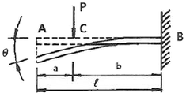
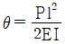
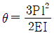
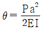
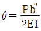
(정답률: 19%)
18. 지름 30mm의 환봉 시험편에서 표점거리를 10mm로 하고 스트레인 게이지를 부착하여 신장을 측정한 결과 인장하중 25kN에서 신장 0.0418mm가 측정되었다. 이 때의 지름은 29.97mm이었다. 이 재료의 포아송비(u)는?
- 0.239
- 0.287
- 0.0239
- 0.0287
(정답률: 28%)
19. 그림과 같이 한쪽 끝을 지지하고 다른 쪽을 고정한 보가 있다. 보의 단면은 직경 10cm의 원형이고 보의 길이는 L이며, 보의 중앙에 2094N의 집중하중 P가 작용하고 있다. 이 때 보에 작용하는 최대굽힘응력이 8MPa라고 한다면, 보의 길이 L은 약 몇 m인가?
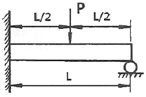
- 2.0
- 1.5
- 1.0
- 0.7
(정답률: 13%)
20. 두께 10mm의 강판에 지름 23mm의 구멍을 만드는데 필요한 하중은 약 몇 kN인가? (단, 강판의 전단응력 τ=750MPa이다.)
- 243
- 352
- 473
- 542
(정답률: 22%)
2과목: 기계제작법
21. CNC 프로그래밍에서 기능과 주소(address)의 연결이 잘못 짝지어진 것은?
- 보조기능-A
- 준비기능-G
- 주축기능-S
- 이송기능-F
(정답률: 42%)
22. 표면경화법 중 질화법의 특징에 관한 설명으로 틀린 것은?
- 마모 및 부식에 대한 저항이 크다.
- 담금질할 필요가 없다.
- 경화층이 두껍다.
- 변형이 적다.
(정답률: 31%)
23. 다음 중 전해액 안에서 공작물을 양극으로 하고 구리, 아연 등을 음극으로 하여 전류를 통함으로서 소재의 경면작업이 가능한 가공방법은?
- 전해연삭
- 화학연마
- 배럴연마
- 전해연마
(정답률: 39%)
24. 주조에서 원형제작 시 고려사항으로서 얇은 판재로 제작된 목형은 변형이 쉽고 용융금속의 응고 시 내부 응력에 의한 변형 및 균열을 초래할 수 있는데 이를 방지하기 위한 목적으로 옳은 것은?
- 덧붙임(stop-off)
- 라운딩(rounding)
- 목형구배(pattern-draft)
- 코어 프린트(core print)
(정답률: 28%)
25. 다음 드로잉(drawing) 가공에 대한 설명 중 옳지 않은 것은?
- 다이의 모서리 둥글기 반지름이 크면 주름이 나타나지 않는다.
- 펀치의 최소 곡률 반지름은 펀치의 지름보다 1/3 작게 한다.
- 펀치와 다이 사이의 간격은 재료 두께와 다이 벽과의 마찰을 피하기 위한 것이다.
- 드로잉률이 작을수록 드로잉력은 증가한다.
(정답률: 17%)
26. 센터리스 연삭(centerless grinding)의 장점에 대한 설명으로 틀린 것은?
- 연삭작업은 숙력된 작업자가 필요하다.
- 중공의 가공물을 연삭할 때 편리하다.
- 연삭 여유가 작아도 된다.
- 가늘고 긴 가공물의 연삭에 적합하다.
(정답률: 40%)
27. 롤러의 중심거리가 300mm의 사인바(sine bar)를 이용하여 측정한 결과 각도가 24°이었다. 사인바 양단의 게이지 블록 높이 차는 약 몇 mm인가?
- 134
- 129
- 122
- 118
(정답률: 23%)
28. 강판에 M10×1.5의 탭(tap)을 가공하려면 구멍을 몇 mm 가공해야 하는가?
- 7.5
- 8
- 8.5
- 9
(정답률: 46%)
29. 다음 중 항온 열처리의 종류로 가장 거리가 먼 것은?
- 오스템퍼링(austempering)
- 마템퍼링(martempering)
- 오스퀜칭(ausquenching)
- 마퀜칭(marquenching)
(정답률: 33%)
30. 다음 굽힘 가공 시 스프링 백 변화에 관한 설명으로 옳지 않은 것은?
- 소재의 경도가 클수록 커진다.
- 동일 두께의 판재에서 스프링 백 변화가 클수록 좋다.
- 동일 두께의 판재에서는 구부림 각도가 작을수록 커진다.
- 동일 판재에서 구부림 반지름이 같을 때에는 두께가 얇을수록 커진다.
(정답률: 27%)
31. 마이크로미터 나사의 피치가 0.5mm이고 딤블의 원주눈금이 50등분으로 나누어져 있다. 딤블을 두 눈금 움직였다면 스핀들의 이동 거리는 몇 mm인가?
- 0.01
- 0.02
- 0.04
- 0.⑤
(정답률: 25%)
32. 주물사의 주된 성분으로 틀린 것은?
- 석영
- 장석
- 운모
- 산화철
(정답률: 37%)
33. 거친 원통의 내면 및 외면을 강구(steel ball)나 롤러로 눌러 매끈한 면으로 다듬질하는 일종의 소성가공으로 옳은 것은?
- 배럴가공(barrel finishing)
- 래핑(lapping)
- 숏 피닝(shot peening)
- 버니싱(burnishing)
(정답률: 29%)
34. 다음 중 연삭 숫돌의 3요소는?
- 결합도, 숫돌, 지름, 조직
- 결합제, 숫돌, 두께, 입도
- 조직, 결합도, 기공
- 결합제, 숫돌입자, 기공
(정답률: 36%)
35. 구성인선(built-up edge)의 방지대책으로 틀린 것은?
- 절삭속도를 크게 한다.
- 경사각(rake angle)을 작게 한다.
- 절삭공구의 인선을 날카롭게 한다.
- 절삭 깊이(depth of cut)를 작게 한다.
(정답률: 28%)
36. 래핑(lappung)의 특징으로 틀린 것은?
- 기하학적 정밀도를 높일 수 있다.
- 래핑 가공면은 내식성과 내마멸성이 좋다.
- 경면과 같은 매끈한 가공면을 얻을 수 있다.
- 가공면에 랩제가 잔류하여 제품의 부식을 막아준다.
(정답률: 26%)
37. 절삭가공 시 유동형 칩이 발생하는 조건으로 옳지 않은 것은?
- 절삭 깊이가 적을 때
- 절삭속도가 느릴 때
- 바이트 인성의 경사각이 클 때
- 연성 재료(구리, 알루미늄 등)를 가공할 때
(정답률: 26%)
38. 용접 공급관을 통하여 입상의 용제를 쌓아놓고 그 속에 송급되는 와이어와 모재를 용융시켜 접합되는 용접방법은?
- 서브머지드 아크 용접법
- 불활성가스 금속 아크 용접법
- 플라스마 아크 용접법
- 금속 아크 용접법
(정답률: 29%)
39. 다음 중 초음파 가공의 특징으로 가장 거리가 먼 것은?
- 가공물체에 가공변형이 남지 않는다.
- 공구 이외에는 마모부품이 거의 없다.
- 가공면적이 넓고, 가공 깊이도 제한받지 않는다.
- 다이아몬드, 초경합금, 열처리 강 등의 가공이 가능하다.
(정답률: 35%)
40. 아세틸렌 가스의 자연발화 온도는 몇 ℃인가?
- 780~790
- 5⑤~515
- 406~408
- 62~80
(정답률: 18%)
3과목: 기계설계 및 기계재료
41. 기어에 있어서 사이클로이드(cycloid) 치형의 일반적인 특징에 대한 설명으로 틀린 것은?
- 미끄럼률이 일정하여 마모면에서 유리하다.
- 중심거리가 맞지 않으면 원활한 물림이 되지 않는다.
- 치형을 가공하기가 어렵다.
- 일반 동력전달용 산업기계에 사용하기 적합하다.
(정답률: 22%)
42. 구름 베어링에서 기본 동적경하중(basic dynamic load rating)의 의미는?
- 25rpm으로 500시간의 수명을 유지할 수 있는 하중이다.
- 33.3pm으로 500시간의 수명을 유지할 수 있는 하중이다.
- 25pm으로 1000시간의 수명을 유지할 수 있는 하중이다.
- 33.3pm으로 1000시간의 수명을 유지할 수 있는 하중이다.
(정답률: 36%)
43. 일반적인 평 벨트 전동장치에서 전달동력을 높이기 위한 방법으로 틀린 것은?
- 초기장력을 높여준다.
- 아이들러를 적용한다.
- 십자걸기보다는 바로걸기를 한다.
- 바로걸기의 경우 이완측이 위가 되도록 한다.
(정답률: 37%)
44. 코일 스프링에서 스프링 코일의 평균지름을 1.5배, 소선의 지름 역시 1.5배로 크게 하면 같은 축방향 하중에 의해 선재에 생기는 최대전단응력은 변경 전의 최대전단응력(τmax)의 약 몇 배로 되는가? (단, 응력수정계수는 변하지 않는다고 가정한다.)
- 0.125×τmax
- 0.444×τmax
- 1.5×τmax
- 2.25×τmax
(정답률: 36%)
45. 나사산과 골의 반지름이 같은 원호로 이은 모양을 하고 있으며, 전구의 결합부와 같이 박판의 원통을 전조하여 만드는 것 등에 사용되는 나사는?
- 둥근나사
- 미터나사
- 유니파이나사
- 관용나사
(정답률: 44%)
46. 원판 모양의 밸브 디스크가 회전하면서 관을 개폐하여서 유량을 조절하며, 스로틀 밸브(throttle valve)라고도 부르는 것은?
- 버터플라이 밸브
- 슬루스 밸브
- 스톱 밸브
- 콕
(정답률: 28%)
47. 1줄 겹치기 리넷이음에서 리벳의 효율을 나타내는 식은? (단, p:피치, d:리벳 지름, τ:리벳의 전단응력, σ:판의 인장응력, t:판의 두께이다.)
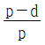
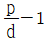
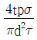
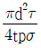
(정답률: 34%)
48. 지름이 d인 축에 조립한 묻힘 키에 작용하는 최대 토크를 키의 측면의 압축저항으로 받는다면 필요한 키의 측면적은? (단, 키 홈의 깊이는 키 높이의 1/2이고, 키에 작용하는 압축응력을 σc, 축에 작용하는 전단응력을 τ라고 할 때, σc=2.5τ이다.)
- πd2/3
- πd2/6
- πd2/10
- πd2/12
(정답률: 18%)
49. 축 방향의 인장력이나 압축력을 전달하는 데 가장 적합한 축 이음은?
- 머프 축이음(muff conpling)
- 유니버설 조인트(universal joint)
- 코터 이음(cotter joing)
- 올덤 축이음(Oldham's coupling)
(정답률: 34%)
50. 그림과 같은 블록 브레이크에서 드럼축이 우회전 할 때와 좌회전 할 때의 제동을 비교해보고자 한다. 우회전할 때 레버 끝단에 가해지는 힘을 F1이라고 하고, 좌회전할 때 레버끝단에 가해지는 힘을 F2라고 할 때 두 경우에 대하여 제동토크가 동일하기 위해서는 F1/F2의 값은 약 얼마이어야 하는가? (단, 그림에서 a=3b=3D이며, 레버 힌지점과 블록 접촉부는 동일한 높이에 있다.)
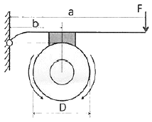
- 0.5
- 1
- 0.33
- 3
(정답률: 29%)
51. 열경화성 수지에 해당되는 것은?
- ABS수지
- 에폭시수지
- 폴리아미드
- 염화비닐수지
(정답률: 33%)
52. 다음 중 비중이 가장 작고, 항공기 부품이나 전자 및 전기용 제품의 케이스 용도로 사용되고 있는 합금 재료는?
- Ni 합금
- Cu 합금
- Pb 합금
- Mg 합금
(정답률: 44%)
53. 칼로라이징은 어떤 원소를 금속표면에 확산 침투시키는 방법인가?
- Zn
- Si
- Al
- Cr
(정답률: 40%)
54. 구리(Cu) 합금에 대한 설명 중 옳은 것은?
- 청동은 Cu+Zn 합금이다.
- 베릴륨 청동은 시효경화성이 강력환 Cu 합금이다.
- 애드미럴티 황동은 6-4황동에 Sb을 첨가한 합금이다.
- 네이벌 황동은 7-3황동에 Ti을 첨가한 합금이다.
(정답률: 31%)
55. 다음 중 반발을 이용하여 경도를 측정하는 시험법은?
- 쇼어경도시험
- 마이어경도시험
- 비커즈경도시험
- 로크웰경도시험
(정답률: 40%)
56. Fe-C 평형상태도에서 온도가 가장 낮은 것은?
- 공석점
- 포정점
- 공정점
- Fe의 자기변태점
(정답률: 38%)
57. 면심입장격자(FCC)의 단위격자 내에 원자 수는 몇 개인가?
- 2개
- 4개
- 6개
- 8개
(정답률: 42%)
58. 합금주철에서 특수합금 원소의 영향을 설명한 것 중 틀린 것은?
- Ni은 흑연화를 방지한다.
- Ti은 강한 탈산제이다.
- V은 강한 흑연화 방지 원소이다.
- Cr은 흑연화를 방지하고, 탄화물을 안정화한다.
(정답률: 33%)
59. 강의 열처리 방법 중 표면경화법에 해당하는 것은?
- 마?칭
- 오스포밍
- 침탄질화법
- 오스템퍼링
(정답률: 44%)
60. 다음의 조직 중 경도가 가장 높은 것은?
- 펄라이트(pearlite)
- 페라이트(ferrite)
- 마텐자이트(martensite)
- 오스테나이트(austenite)
(정답률: 52%)
4과목: 기구학 및 CAD
61. 형상모델링에서 기본입체(primitive)의 조합을 이용하여 복잡한 형상을 표현하는 기능과 관계있는 기능은?
- 리프팅 작업
- 불리안 작업
- 스키닝 작업
- 스위핑 작업
(정답률: 26%)
62. CAD 모델의 기하학적 형상 정보에 직접적인 영향을 미치는 것은?
- 레이어(layer)
- 쉐이딩(shading)
- 회전 스위핑(sweeping) 시 회전축의 위치
- 아이소파라메트릭(isoparmetric) 곡선의 출력
(정답률: 30%)
63. 피쳐기반(feature based) 모델링 방식의 특징으로 틀린 것은?
- 피쳐 단위로 설계하므로 형상의 정의가 쉽고 빠르다.
- 내재된 피쳐 간의 관계가 설계 변경 시에 자동 갱신된다.
- 설계피쳐와 가공방식은 일대일로 대응하므로 가공정보 추출이 용이하다.
- 설계단계에서 가공방식을 고려해야 할 경우에 설계효율이 떨어질 수 있다.
(정답률: 26%)
64. 네 점 P0, P1, P2, P3을 조정점으로 하는 3차 Bezier 곡선의 P3에서의 집선벡터를 조정점의 함수로 표현한 결과로 옳은 것은?
- 3P2-3P3
- 3P3-3P2
- P1+2P2+P3
- P1-2P2+P3
(정답률: 27%)
65. 복잡한 물체를 시각적으로 보다 쉽게 사용자가 인식할 수 있도록 하기 위한 알고리즘이 아닌 것은?
- 음영 처리(shading)
- 교선 계산(intersection)
- 은선 제거(hidden line removal)
- 은면 제거(hidden surface removal)
(정답률: 37%)
66. 3차원 와이어 프레임으로 나타낸 CAD 모델에 관한 설명 중 틀린 것은?
- 질량에 관한 성질을 계산할 수 있다.
- 꼭지점과 모서리에 대한 정보를 가지고 있다.
- 2차원 도면 생성에 필요한 정보를 가지고 있다.
- 때로는 나타내고자 하는 물체의 모양이 모호한 경우도 있다.
(정답률: 36%)
67. 제품의 기획에서 폐기까지 제품 수명 주기동안 제품정보를 생성, 관리, 배포 및 활용될 수 있도록 일관성 있게 지원하는 기업의 비즈니스 솔루션을 무엇이라 하는가?
- CE(Concurrent Engineering)
- PLM(Product Lifecycle Management)
- CAPP(Computer Aided Process Planning)
- CIM(Computer Integrated Manufacturing)
(정답률: 35%)
68. 작업장에 놓인 여러 대의 가공기계를 동시에 제어하여 생산성을 높이고자 한다. 다음 중 이를 위해 가장 적합한 생산시스템은?
- CNC
- DNC
- machining center
- GT(Group Technology)
(정답률: 43%)
69. 그래픽 장치의 하드웨어 구성에 대한 설명으로 틀린 것은?
- 대형 컴퓨터에 여러 대의 그래픽 장치와 출력 장치를 연결하는 방식은 초기 투자비가 많이 들지만, 유지 관리비는 매우 저렴하다.
- 워스크테이션과 분산 계산 기술의 발전으로 엔지니어링 워크스테이션과 출력 장치를 네트워크 환경 하에 연결하는 방식이 폭넓게 사용되고 있다.
- 최근 개인용 컴퓨터와 엔지니어링 워크스테이션의 구분이 모호해지고 있어서 개인용 컴퓨터와 출력장치를 네트워크 환경 하에 연결하는 방식도 많이 사용되고 있다.
- 컴퓨터와 그래픽 장치가 일체화된 엔지니어링 워크스테이션과 출력 장치를 네트워크 환경 하에 연결하는 방식은 과도한 초기 투자를 피할 수 있다는 장점이 있다.
(정답률: 30%)
70. 시각 좌표계(viewing coordinate system)를 정의하기 위해 지정해야할 값이 아닌 것은?
- 상향 벡터(up vector)
- 관측 대상 위치(viewsite)
- 눈 또는 카메라의 위치(viewpoint)
- 눈과 스크린과의 거리(screen distance)
(정답률: 39%)
71. 그림과 같은 왕복 슬라이더 크랭크 기구에서 C1점으로부터 슬라이더 중심점까지의 거리(x)를 크랭크의 회전각(θ)에 관한 식으로 옳게 나타낸 것은? (단, C1은 슬라이더가 크랭크의 회전중심점(A)으로부터 가장 멀리 있을 때의 슬라이더 중심점이다.)
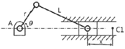
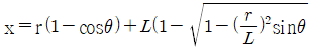
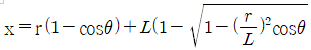
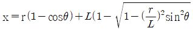
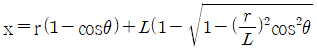
(정답률: 25%)
72. 어떤 기구가 정지 상태에서 일정한 가속도로 출발하여 1분 후에 100km/h의 속도가 되었다. 이 때 가속도의 크기는 약 몇 m/s2인가?
- 0.463
- 1.67
- 13.89
- 27.78
(정답률: 18%)
73. 다음 중 스퍼 기어와 비교할 때, 헬리컬 기어를 사용하여 큰 동력을 전달할 수 있는 이유로 가장 적합한 것은?
- 기어의 탄성변형이 크기 때문에
- 물림길이 및 물림률이 크게 때문에
- 이의 두께가 스퍼기어보다 크게 때문에
- 헬리컬 기어의 재질은 스퍼기어보다 좋은 재료를 쓰기 때문에
(정답률: 36%)
74. 그림과 같은 유성기어열에서 태양기어(1)를 시계방향으로 100rpm, 암을 시계방향ㅇ로 210rpm으로 회전시켰을 때 링기어(3)의 회전수와 방향은? (단, 태양기어(1)의 잇수는 40개, 유성기어(2)의 잇수는 20개, 링기어(3)의 잇수는 80개이다.)
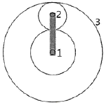
- 시계방향으로 250rpm 회전한다.
- 시계방향으로 500rpm 회전한다.
- 반시계방향으로 250rpm 회전한다.
- 반시계방향으로 500rpm 회전한다.
(정답률: 21%)
75. 감지전동기구(wrapping driving mechanism) 중 축 사이의 거리가 가장 먼 경우에 사용하기 적합한 것은?
- 체인 전동기구
- 로프 전동기구
- V벨트 전동기구
- 평벨트 전동기구
(정답률: 31%)
76. 운전 중에 속도비가 변화하는 마찰차가 아닌 것은?
- 타원차
- 쌍곡선차
- 대수나선차
- 나뭇잎형차
(정답률: 19%)
77. 벨트 전동장치의 동력전달방식에 대한 설명으로 틀린 것은?
- 벨트와 풀리 사이의 마찰력으로 동력을 전달한다.
- 운전 중의 유효장력은 긴장측 장력에서 이완측 장력을 뺀 값이다.
- 벨트가 회전하기 시작하면 이완측의 장력은 커지고 긴장측의 장력은 작아진다.
- 벨트 조립 시에는 초기장력 주어 조립해야 하기 때문에 운전 중이 아닌 때도 벨트는 장력이 존재한다.
(정답률: 28%)
78. 캠의 종류를 크게 평면캠과 입체캠으로 분류할 때, 입체캠에 속하는 것은?
- end cam
- heart cam
- face cam
- tangential cam
(정답률: 37%)
79. 간헐운동기구의 일종으로 래칫 휠에 2개의 폴이 각각 정지작용과 이송작용을 번갈아가면서 필요한 간헐운동을 확실히 이행하는 기구는?
- 탈진 기구
- 제네바 기구
- 캠 래칫 기구
- 마찰 래칫 기구
(정답률: 21%)
80. 케네디의 정리(Kennedy's theorem)는 무엇을 표현한 것인가?
- 자유도에 관한 정리
- 순간중심에 관한 정리
- 속도의 도식적 해법에 관한 정리
- 병진운동과 회전운동의 관계성에 대한 정리
(정답률: 31%)